|
|
HELP FIND THE FOLLOWING LOCATIONS
PAGE 3THE AVENGERS: A Funny Thing Happened on the Way to the Station (John Krish: March 1967) and THE AVENGERS: Bizarre (Leslie Norman: February 1969)
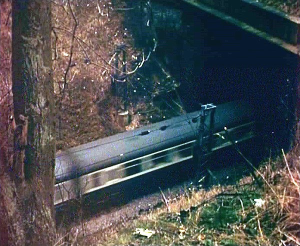
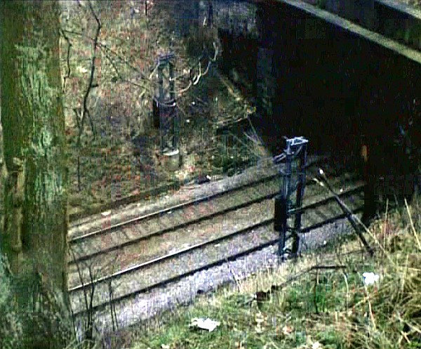
THE AVENGERS: Requiem (Don Chaffey: January 1969)
John Steed drives the red Triumph 2000 with Miranda Loxton aboard along a country lane and pulls off the road so Miranda can remove her disguise.
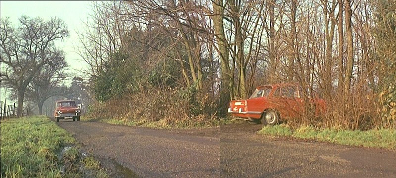
THE AVENGERS: The Rotters (Robert Fuest: September 1968)
Unknown 1 - Steed drives Tara in his yellow Rolls Royce to the church where Pym is at work in the hope of saving him from becoming yet another murder victim.
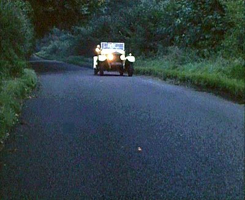
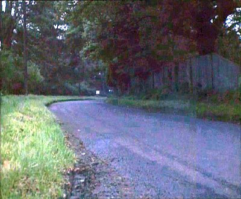
Unknown 2 - Steed races towards the offices of Wainwright Timber Industries to save Tara.
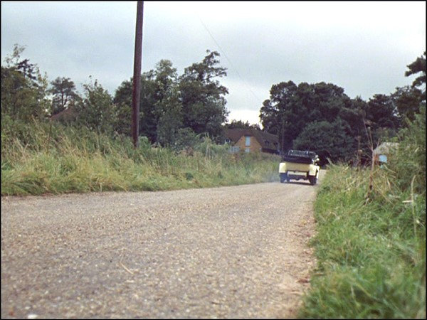
THE AVENGERS: The Girl From Auntie (Roy Baker: October 1965)
Painted backdrop -
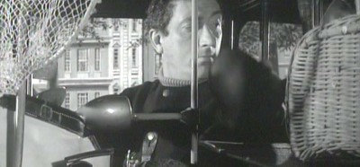
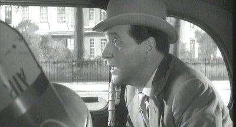
Abingdon Street, London SW1 -
Identified by GBC on the Britmovie forum, July 2013

Unknown - In the back of the taxi Steed starts to bind and gag Georgie as he explains his plan to fool the foreign agents that she is actually the real Mrs. Peel.
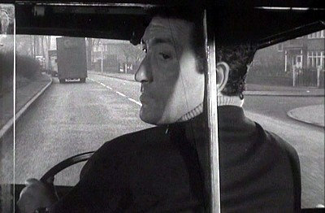
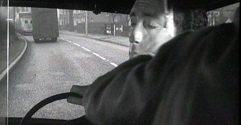
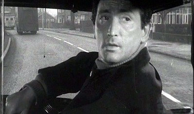
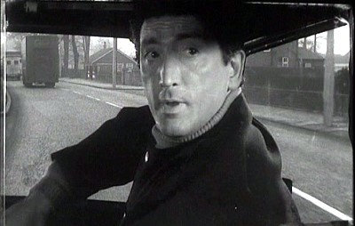
THE AVENGERS: Too Many Christmas Trees (Roy Baker: February 1965)
Unknown - Steed and Mrs Peel return home after the adventure in a horse-drawn trap.
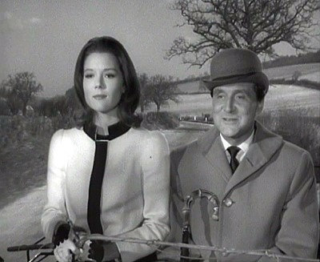
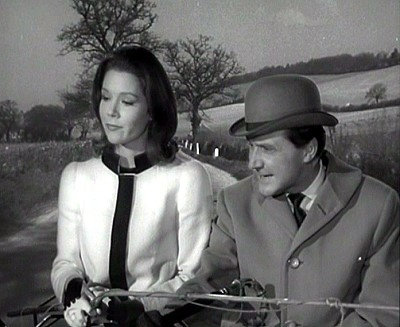
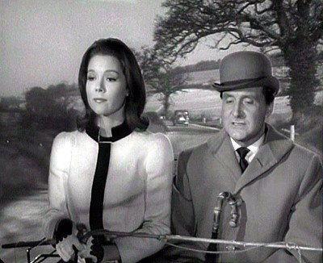
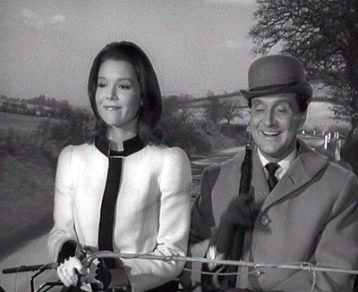
THE AVENGERS: Room Without A View (Roy Baker: April 1965)
Unknown - The Chessman Hotel
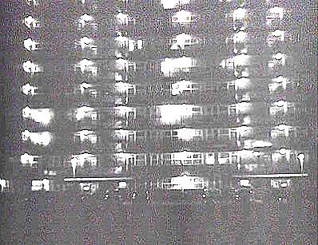
THE AVENGERS: The Living Dead (John Krish: December 1966)
Unknown 1 - The Duke of Benedict’s mine.
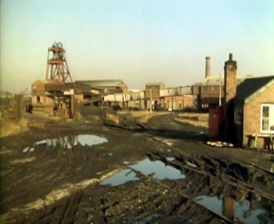
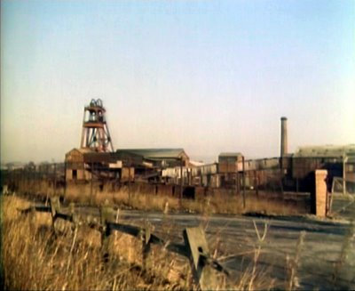
Unknown 2 - Mrs. Peel, we’re needed!
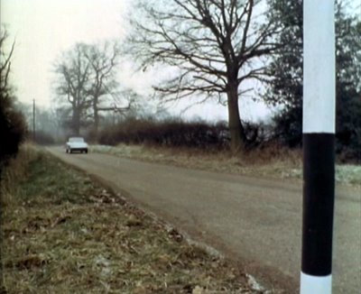
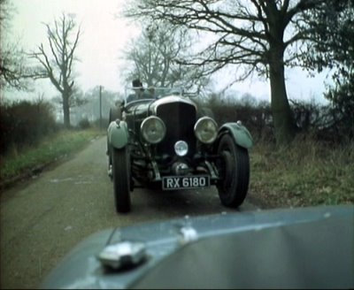
THE AVENGERS: Dead Man's Treasure (Sidney Hayers: June 1967)
Unknown - Mrs Peel (Diana Rigg) waits for Mike (Norman Bowler) to report on the state of the oposition. When he returns they set off for Tree Top Farm
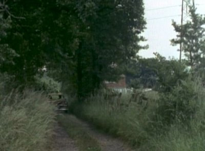
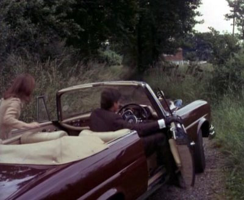
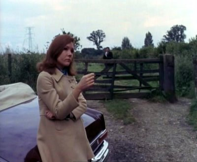
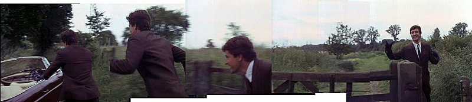
THE AVENGERS: Castle De'Ath (James Hill: August 1965)
Unknown - After driving away from the castle for the last time, Steed suggests a spot of fishing to Mrs Peel.
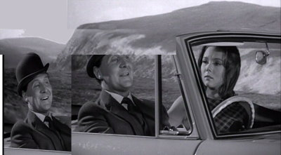
THE AVENGERS: The Master Minds (Peter Graham Scott: December 1964)
Unknown - Steed and Mrs Peel depart for new adventures in the Bentley (back projection).
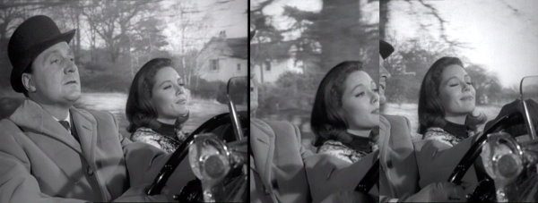
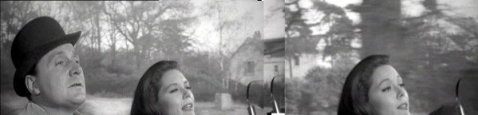
Think you know a spot? Need a bigger image? Email me.
< Previous | Index | Avengerland | Next >